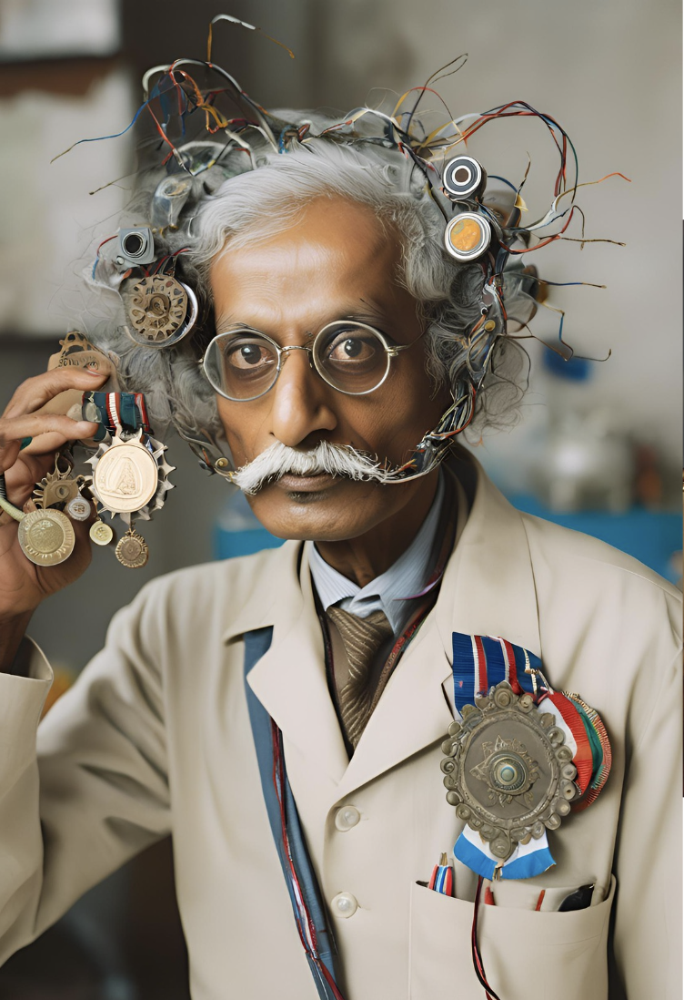

Destination:
EXODUS
Welcome to Water Planet EXODUS.
Main Species: Naga
SPACE
Join us on a journey through the cosmos
and explore the wonders of the universe.
Destination:
Welcome to nature planet, merged with Plants.
Main Species: Plantians
Destination:
Welcome to Mars, our red planet sister.
Main Species: Second generation People (Martian)
Exodus
A Journey Beyond Imagination
As one of our most sought-after destinations,
Exodus offers travelers an experience unlike any other.
With the Future Tourist Space Agency, you’ll journey to the Blue Planet in comfort and style, enjoying the safest and most affordable interplanetary travel.
Established since 2017, our agency is dedicated to making space exploration accessible and unforgettable.
What to Expect on Exodus:
Passengers can look forward to breathtaking underwater landscapes, from the towering
Canyon Eternal (the deepest point) to the vast, ancient valleys of Valles Exodus. Experience the thin, chill Exodus atmosphere, clean water and witness the pinkish-red skies, unlike anything on Earth.
Enjoy guided tours of past rover and landing sites, a Exodus sunset, and the unique geological formations that make this planet so mysterious and captivating.
With Us, You will Experience:
The highest safety standards in the galaxy.
Luxurious cabins for restful interplanetary journeys.
Professional space guides to enhance your Exodus adventure.
Let us make your dream of visiting Exodus a reality!
PLANTIA
A Journey Beyond Imagination
As one of our most sought-after destinations,
Plantia offers travelers an experience unlike any other.
With the Future Tourist Space Agency, you’ll journey to the Green Planet in comfort and style, enjoying the safest and most affordable interplanetary travel.
Established since 2017, our agency is dedicated to making space exploration accessible and unforgettable.
What to Expect on Plantia:
Passengers can look forward to breathtaking landscapes, from the towering
Exodia Forests (the solar system's biggest forest) to the vast, ancient valleys of Kaladria Rora. Experience the thin, chill Plantia atmosphere and witness the blue skies, unlike anything on Earth.
Enjoy guided tours of past rover and landing sites, a Plantia sunset, and the unique geological formations that make this planet so mysterious and captivating.
With Us, You will Experience:
The highest safety standards in the galaxy.
Luxurious cabins for restful interplanetary journeys.
Professional space guides to enhance your Mars adventure.
Let us make your dream of visiting Mars a reality!
MARS
A Journey Beyond Imagination
As one of our most sought-after destinations,
Mars offers travelers an experience unlike any other.
With the Future Tourist Space Agency, you’ll journey to the Red Planet in comfort and style, enjoying the safest and most affordable interplanetary travel.
Established since 2017, our agency is dedicated to making space exploration accessible and unforgettable.
What to Expect on Mars:
Passengers can look forward to breathtaking landscapes, from the towering
Olympus Mons (the solar system's tallest volcano) to the vast, ancient valleys of Valles Marineris. Experience the thin, chill Martian atmosphere and witness the pinkish-red skies, unlike anything on Earth.
Enjoy guided tours of past rover and landing sites, a Martian sunset, and the unique geological formations that make this planet so mysterious and captivating.
With Us, You will Experience:
The highest safety standards in the galaxy.
Luxurious cabins for restful interplanetary journeys.
Professional space guides to enhance your Mars adventure.
Let us make your dream of visiting Mars a reality!
Meet our crew
General Ludvig Honof is a legendary tactician who has served the Interstellar Coalition for 150 years. At 213 years old, he has lived through multiple generations of space warfare, his life extended by advanced cryosleep and longevity tech. Known for his stoic leadership and unmatched strategic mind, Honof is a cornerstone of humanity’s defense in the cosmos.
Space General
Ludvig Honof
Captain Ezra Kael
A seasoned Mars explorer, Kael is a master navigator and leads expeditions across the harsh Martian terrain. Known for his resilience, he’s often called "The Martian Ghost" for his ability to disappear and reappear across red deserts with precision.
Commander Iris Vale
Specialist in Plantia missions, Vale is a skilled biologist and survival expert, adept at navigating the dense, exotic jungles of the vibrant but hazardous planet. Her keen senses and adaptability have earned her the nickname "Plantia’s Whisper."
Lieutenant Jax Fenn
A tactical engineer, Fenn is responsible for critical supply runs and exploration on Exodus, a planet with extreme gravitational shifts. Known as "The Rock" by his crew, he’s grounded and reliable, always finding solutions to the planet’s unpredictable terrain.
Dr. Selene Moray
Chief medical officer, Moray has spent her career managing the physical toll of space travel on long-haul missions. Respected for her compassion and quick thinking, she ensures the crew’s well-being on their challenging journeys.
Our spacecraft is equipped with cutting-edge technology, designed to withstand the harsh conditions of interstellar travel. From advanced propulsion systems to state-of-the-art life support, every aspect of our vessel is engineered for efficiency and safety.
Chief Engineer, Zix is responsible for the design and maintenance of our spacecraft's propulsion systems. His expertise in advanced propulsion technologies has enabled us to reach previously inaccessible regions of the galaxy.
Our chief scientist, Han, is a renowned expert in exoplanetary geology and astrobiology. Her research has been instrumental in the discovery of new worlds and the development of our spacecraft's advanced propulsion systems.
